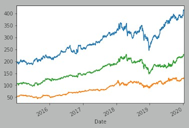

I'm closing my long position on NIO and LCTX while the market's up. Playing with microcap stocks was a fun experiment, but I lost ~$25 overall. I wouldn't do it again. More reliable and well-rooted stocks are definitely the better way to go from my experience (the rest of my portfolio is defense, along with AAPL (tech) and MYL (healthcare)).
I'm thinking about putting in a limit order to sell AAPL at $318 per share, which is its current average 12-month price target. I'd like to have the extra cash to buy other stocks with.
I also went long on TXN today, which provides guidance chips to companies like Lockheed and Raytheon, completing my trifecta of cointegrated defense stocks (math on that in a later post -- I'm still figuring out how to implement a Johansen cointegration test in Python). I made the following graph in Python using data from the Yahoo Finance library and the graph was generated with matplotlib. Blue is LMT, green is RTN, and orange is TXN. The y-axis is price in US dollars and the x-axis is the date in increments of one year.
In the words of my "AI For Trading" class mentor: "Ooh, they're friendly!". Anyway, I'll make another post about the cointegration test and how I did it when I figure out how to properly implement the Johansen test. I'll put the code on Github as well.